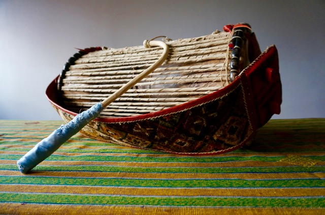
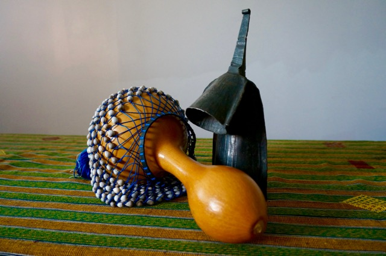

One line of introductory text here: what's the goal/thesis of the project? Who does the work serve and how?
Explore Colonial-Era African Drumming

Iyaalu Dundun (Nigeria/Yoruba)
Double-headed hourglass tension drum played with a curved stick.
Functions as a speech surrogate or "talking drum" that imitates
the tones and inflections of the Yoruba language. Pitch is controlled
by applying pressure to the cords with the hand and wrist. The iyaalu
("mother drum") is the leader of the dundun ensemble.

Axatse (Ghana/Ewe)
Gourd rattle covered with a net of beads or seeds. Typically struck
against the thigh and palm. Axatsewu is a style of Ewe social
dance music that features rattles.
Gankogui (Ghana/Ewe)
Iron double bell, consisting of low-pitched and high-pitched gongs,
that is played with a wooden stick. The timeline pattern played on
gankogui forms the backbone of all traditional Ewe music.